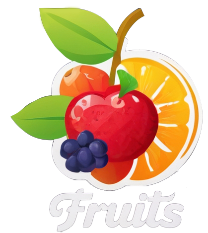

Фрукты — это настоящий подарок природы, который радует нас вкусом и приносит пользу. Они бывают самых разных форм, цветов и размеров: от крошечной смородины до внушительных арбузов, от ярко‑красных яблок до экзотических фиолетовых личи. Каждый фрукт обладает своим неповторимым вкусом — кто‑то сладкий, как спелый персик, кто‑то с приятной кислинкой, как лимон, а некоторые сочетают и то, и другое, как апельсин. Благодаря такому разнообразию фрукты никогда не надоедают и всегда могут удивить.
Главная ценность фруктов — в их натуральности и богатстве полезных веществ. В них много витаминов, минералов и клетчатки, которые нужны нашему организму для хорошей работы. Например, цитрусовые богаты витамином C, который помогает бороться с простудами, бананы дают энергию благодаря калию и натуральным сахарам, а яблоки улучшают пищеварение за счёт клетчатки. При этом фрукты — это естественная сладость без вредных добавок, поэтому они могут стать отличной заменой конфетам и прочим десертам. Регулярное употребление фруктов помогает поддерживать иммунитет, придаёт бодрости и улучшает настроение.
Ещё один большой плюс фруктов — их универсальность. Их можно есть просто так, свежими, наслаждаясь натуральным вкусом. Можно добавлять в салаты, делать соки и смузи, готовить фруктовые десерты или замораживать на зиму. Многие фрукты прекрасно сочетаются друг с другом, позволяя создавать новые вкусовые комбинации. К тому же фрукты обычно легко брать с собой в дорогу или на работу — они не требуют готовки и отлично утоляют лёгкий голод. Включив фрукты в свой ежедневный рацион, вы сделаете питание не только полезнее, но и ярче, ведь каждый фрукт — это маленький кусочек лета и солнца.
 Заказать доставку
Заказать доставку
Сочный тропеический фрукт
Семенной фрукт
Ксло-сладкий цитрусовый
Манго - экзотический фрукт